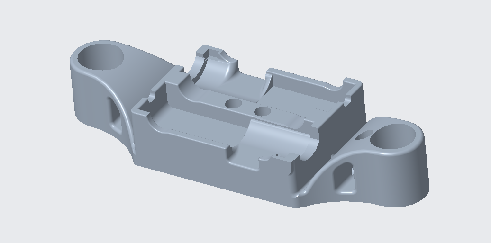
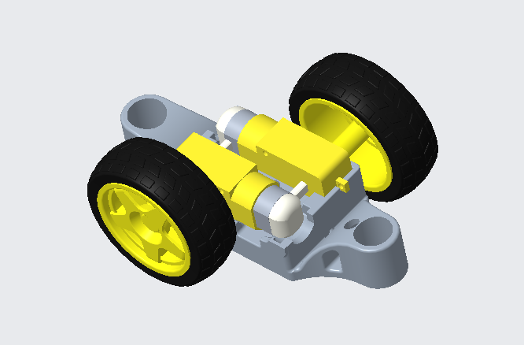
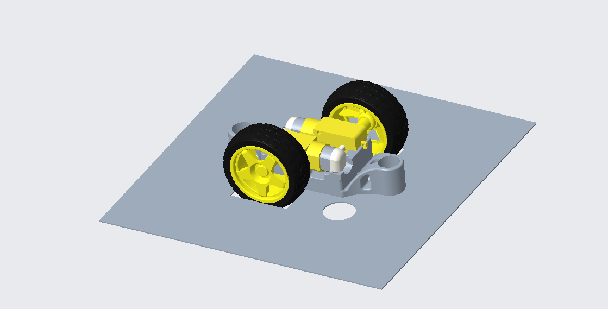
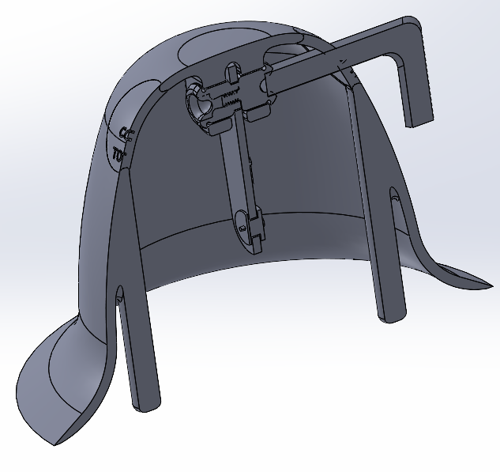
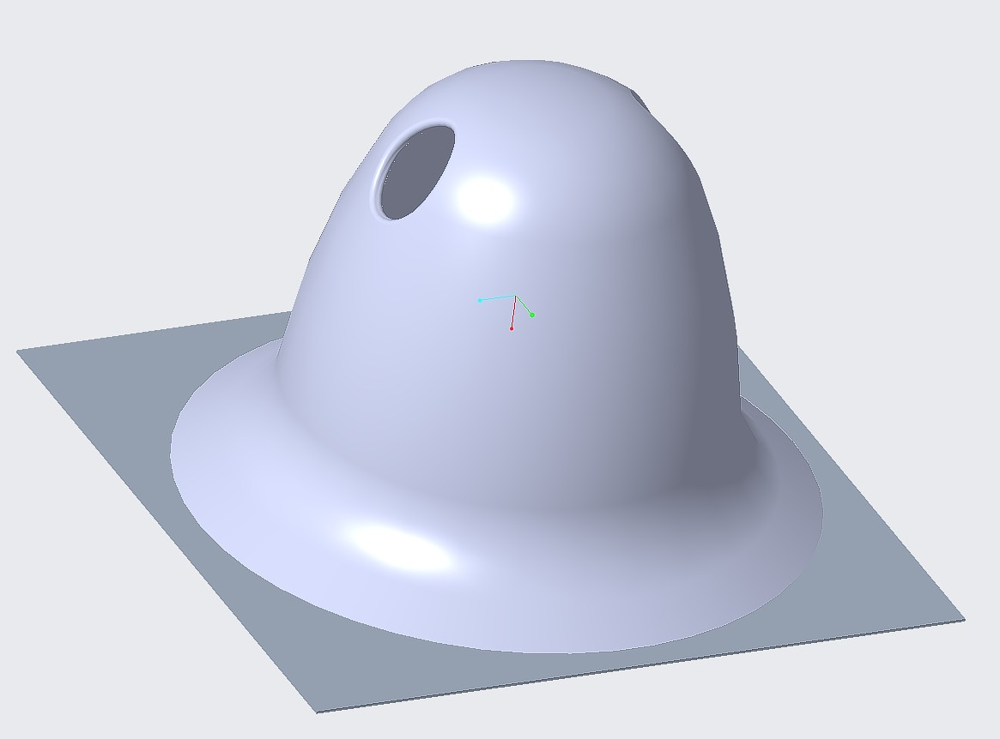

Tipping Hat Battle Bot
Supporting files
Additional photos, video recordings, requirements, and project notes. The main case study presents the selected results; these files provide further context and design history.
Each file can be opened or downloaded individually. Expand a category to browse individual files. HEIC images may require downloading to view.
Code (1)
Read text
#define BLYNK_PRINT Serial #define BLYNK_TEMPLATE_ID "TMPL2xsnIvtL-" #define BLYNK_TEMPLATE_NAME "MiniCar" #define BLYNK_AUTH_TOKEN "REPLACE_WITH_YOUR_VALUE" #include <BlynkSimpleEsp32.h> // Auth token from Blynk char auth[] = "eQ_YCGRbytewnV28IG5FcOIty_wHMGwo"; //copy the BLYNK_AUTH_TOKEN string to here // Your WiFi credentials char ssid[] = "REPLACE_WITH_YOUR_VALUE"; char pwd[] = "quaintbreeze400"; #include "ESP32Servo.h" const int servoPin = 27; //specify pin numbers according to the circuit diagram const int servoAngle = 90; const int pwmPinA = 15; const int in1PinA = 2; const int in2PinA = 0; const int pwmPinB = 13; const int in1PinB = 12; const int in2PinB = 14; Servo myServo; //claim the servo motor object void setup() // setup function runs onces whenever the arduino board is powered on or the "EN" button is pressed { Serial.begin(9600); delay(100); Blynk.begin(auth, ssid, pwd); // Initialize the connection to Blynk using auth-token and WiFI credentials. myServo.attach(servoPin); //set up the servo pin as pin 27 myServo.write(servoAngle); //initialize the servo motor at 90 degree pinMode(in1PinA, OUTPUT); //set in1PinA(2) as an output pin pinMode(in2PinA, OUTPUT); //set in2PinA(0) as an output pin pinMode(pwmPinA, OUTPUT); //set enablePinA(15) as an output pin pinMode(in1PinB, OUTPUT); //set in1PinB(12) as an output pin pinMode(in2PinB, OUTPUT); //set in2PinB(14) as an output pin pinMode(pwmPinB, OUTPUT); //set enablePinB(13) as an output pin } //This function will be activated whenever the virutal pin V0 has a changing status //When the pushbush (V0) is pressed, run motor A forward at the highest speed BLYNK_WRITE(V0) { digitalWrite(pwmPinA, param.asInt()); // param.asInt() return's V0 virtual pin's current value from the blynk App 0-LOW, 1-HIGH digitalWrite(in1PinA, HIGH); //run the gearhead motor A forward, digitalWrite(in2PinA, LOW); } //This function will be activated whenever the virutal pin V1 has a changing status // When the pushbush (V1) is pressed, run motor A backward at the highest speed BLYNK_WRITE(V1) { digitalWrite(pwmPinA, param.asInt()); //run the gearhead motor A backward digitalWrite(in1PinA, LOW); digitalWrite(in2PinA, HIGH); } // When the slider (V2) is dragged, rotate the servo motor to the corresponding angular position BLYNK_WRITE(V2) { int servoPosition = param.asInt(); myServo.write(servoPosition);//servo.write() function controls the servo angle, param.asInt() return's V2 pin's current value (slider position) Serial.print("servo motor goes to"); Serial.println(servoPosition); } // When the slider (V3) is dragged, using the slider value to control motor B's speed (PWM duty cycle) BLYNK_WRITE(V3) { int sliderPosition = param.asInt(); int speed = map(abs(sliderPosition), 0, 100, 0, 255); if(sliderPosition>0){ digitalWrite(in1PinB, HIGH); digitalWrite(in2PinB, LOW); analogWrite(pwmPinB, speed); } else{ digitalWrite(in1PinB, LOW); digitalWrite(in2PinB, HIGH); analogWrite(pwmPinB, speed); } Serial.print("Motor B runs at "); Serial.print(sliderPosition); Serial.println("% speed"); } void loop() { Blynk.run(); // keeps the connection alive and processes data }code/MiniCar_Blynk/MiniCar_Blynk.ino · 0.00 MB · Download
Documents (2)
documents/ME444_S26_T7.docx · 8.33 MB · Download
documents/MG996R Servo Motor.pdf · 0.09 MB · Download
Media/Images (9)
media/images/adhesiveclamping.heic · 2.25 MB · Download
media/images/backleft.heic · 2.39 MB · Download

media/images/botbrac.png · 0.08 MB · Download

media/images/driveSis.png · 0.06 MB · Download

media/images/drivesyswithplate.png · 0.05 MB · Download
media/images/frontright.heic · 2.41 MB · Download
media/images/mountingmotors.heic · 1.36 MB · Download

media/images/popper2prt.png · 0.11 MB · Download

media/images/wholeshebang.jpg · 0.05 MB · Download


Media/Videos (5)
media/videos/20260304-213640000-ios.mp4 · 65.16 MB · Download
media/videos/20260304-215156000-ios.mp4 · 88.47 MB · Download
media/videos/botcelly.mp4 · 1.17 MB · Download
media/videos/botmovement.mp4 · 2.25 MB · Download
media/videos/hattipdemo.mp4 · 1.41 MB · Download
Notes (1)
Read text
# Tipping Hat Battle Bot ## Purpose Immobilize opposing robots while surviving field hazards under the course constraints. ## Requirements and constraints - Fit within a 10 × 10 × 10 inch envelope. - Stay at or below 5 pounds. - Use the provided electronics. - Package the lifting mechanism and drivetrain together. ## Engineering contribution Developed a hat-inspired lifting mechanism and integrated it with a compact drive system and full CAD assembly. ## Outcome and limits The team earned first place in the ME 444 Battle Bot competition. ## Drive bracket: fit and floor contact Before: Caster placement and printing were difficult; the alignment hole and motor geometry caused interference. After: Removed the casters, changed the alignment-hole height, and revised motor clearances so the wheels could sit correctly against the floor. ## Hat mechanism: intended lift versus observed motion Before: The shell was intended to lift vertically and flip an opponent. After: Loose constraints produced a slower sideways hat-tip instead. The bot still won its lab and course battles, but the report does not document a later fix for the intended flipping action. ## Retained source The design report retains the mechanical description, requirements, test results, and limitations. Embedded code screenshots were removed; editable source has credential literals replaced with configuration placeholders.
project-notes.md · 0.00 MB · Download